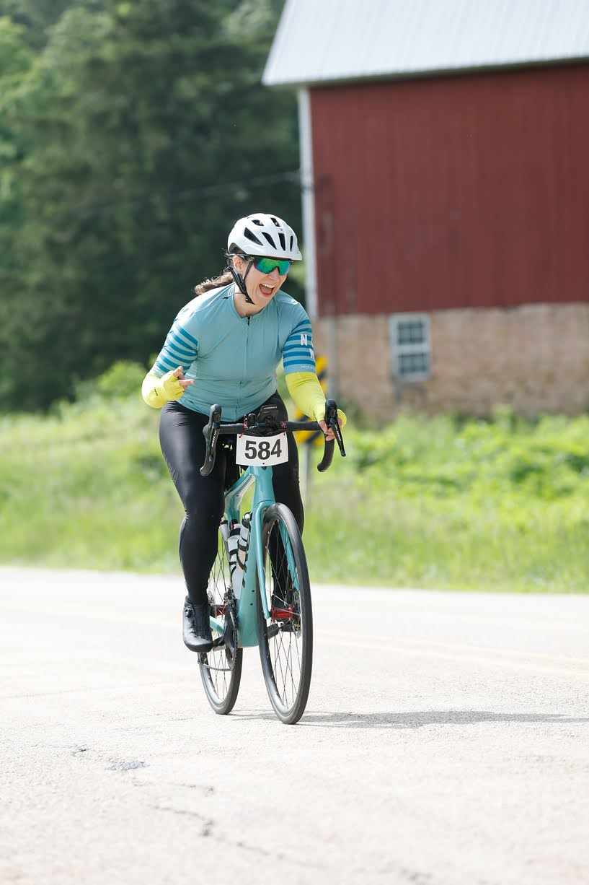
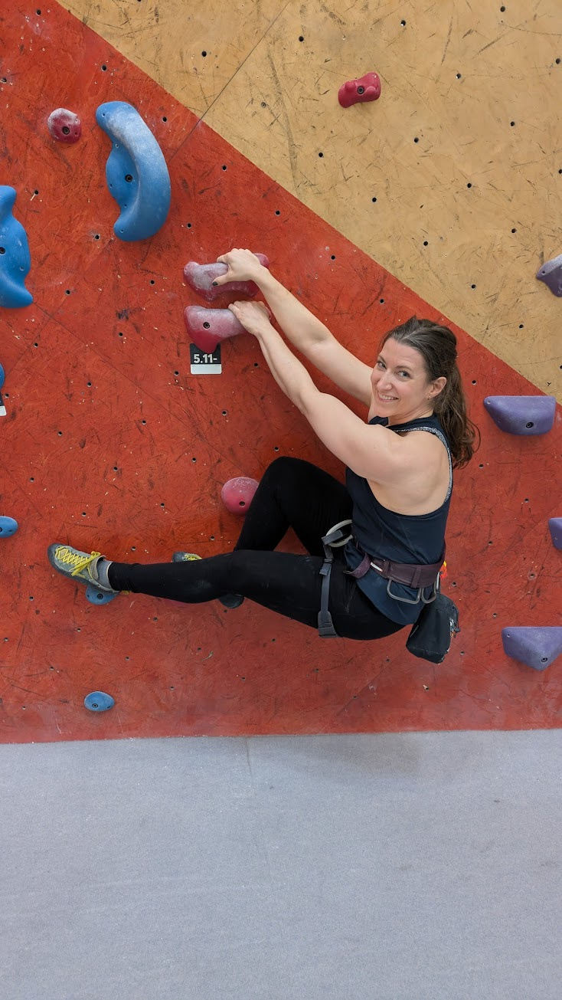
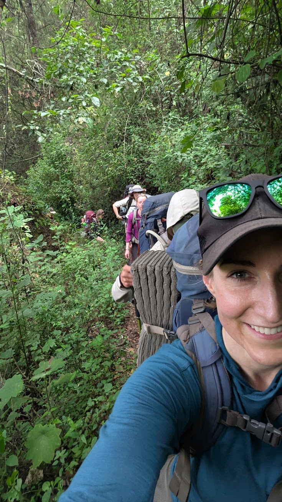

Group Fitness Instructor and Software Developer
Engineering better workouts, one rep at a time
Group fitness is my happy place. I was taking every class I could long before I started teaching, and I still take multiple classes a week because I love the energy and community. As a software engineer, I bring analytical thinking to my programming, but I never lose sight of what makes group fitness special. My classes are effective and (hopefully) fun.
I've never really been good at sitting still. As a kid, I dabbled in various sports, but dance was always what I enjoyed most. I danced on my high school's dance team for 4 years. At the University of Wisconsin-Madison, I discovered group fitness classes, fell in love with them, and eventually auditioned for the university's Group Fitness Instructor training program.
Since then, I've taught in various locations (including Granada, Spain, where I became an expert at counting down from eight in Spanish), eventually expanding into indoor cycling, strength training, kickboxing, yoga, and more. I took a few years off along the way to pursue things like teaching English in South Korea, where I took K-Pop dance fitness classes, and working as a trekking guide for Quetzaltrekkers Guatemala, where I led multi-day hikes up volcanoes and through rural villages (an experience that deepened my appreciation for pushing limits!). These days I'm back stateside, teaching classes at various Equinox locations in Chicago.
When I'm not teaching classes, you'll find me shipping code, cycling longer and longer distances, performing with my salsa dance team, rock climbing (mostly indoors), or hiking up a mountain. (I wish the midwest had some mountains.) I'm also easily peer pressured into athletic competitions like Hyrox.


